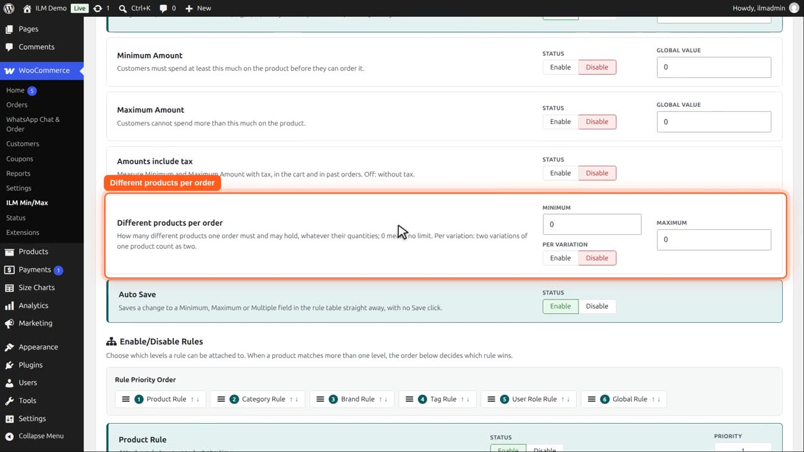
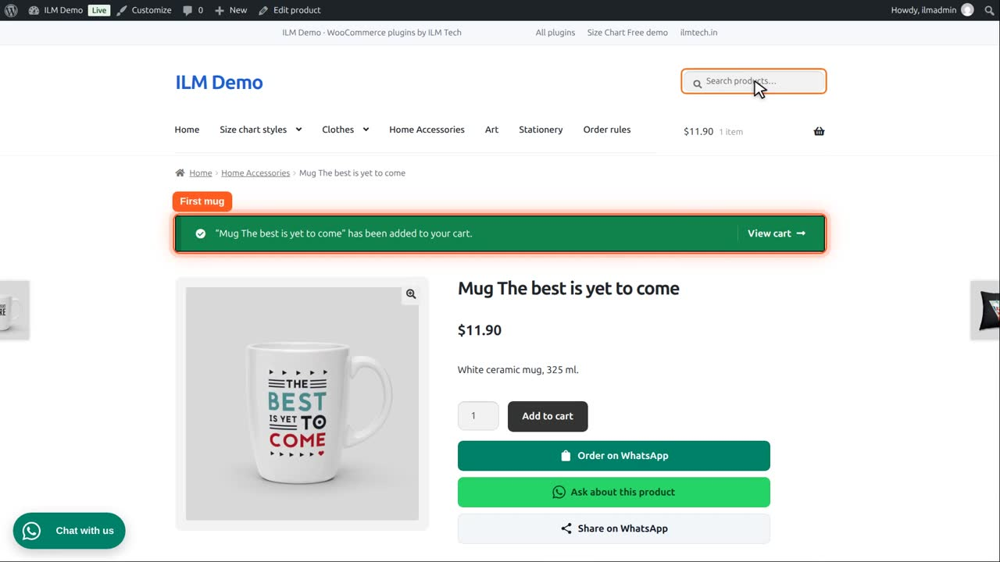
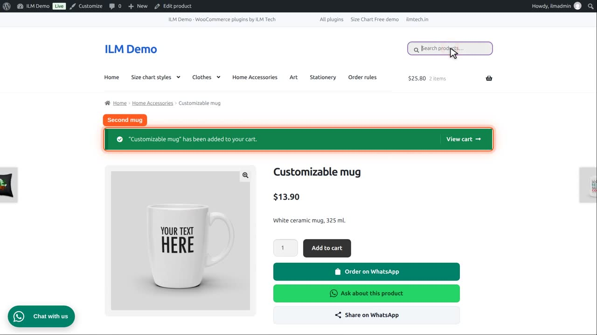
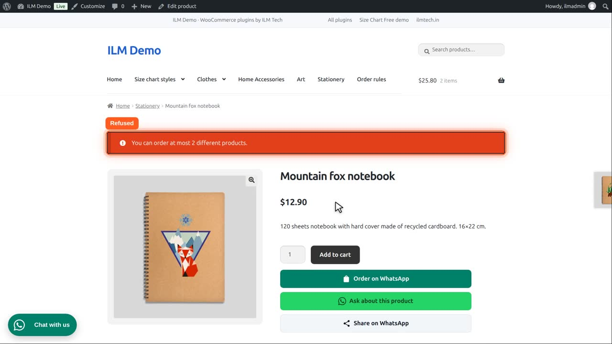
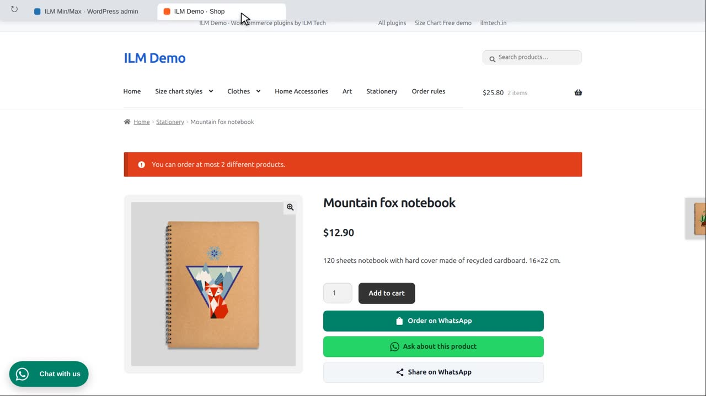
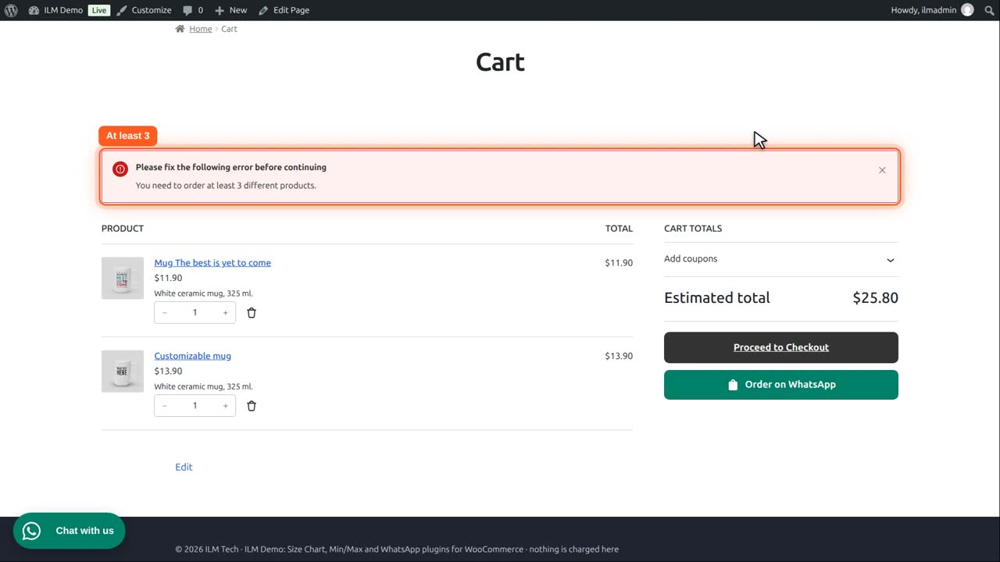

Pro add-on. This feature needs the Pro add-on. See Free and Pro.
| Setting | What it does |
|---|---|
| Different products per order | How many different products one order must hold (Minimum) and may hold (Maximum), whatever their quantities; 0 means no limit. Per variation: two variations of one product count as two. |
This card is on the Configuration tab, General section. Zero means no limit, for both the minimum and the maximum.

Type two in Maximum. An order may now hold at most two different products, whatever their quantities.
A customer adds a first mug,

and a second mug.

A third different product is refused: they can order at most two different products.

Now the other way round: no maximum, and a minimum of three different products.

With only two different products, the cart asks for at least three, and checkout refuses the order until a third product is added.

Per variation decides how variations count. Enabled: two sizes of one shirt count as two products. Disabled: they count as one.